Chapter 7 다중회귀분석 예제
7.1 데이터 탐색
- 데이터
str(multi)## 'data.frame': 40 obs. of 7 variables:
## $ Y : int 443 290 676 536 481 296 453 617 514 400 ...
## $ X1: int 49 27 115 92 67 31 105 114 98 15 ...
## $ X2: int 79 70 92 62 42 54 60 85 72 59 ...
## $ X3: int 76 31 130 92 94 34 47 84 71 99 ...
## $ X4: int 8 6 0 5 16 14 5 17 12 15 ...
## $ X5: int 15 6 9 8 3 11 10 20 -1 11 ...
## $ X6: int 205 129 339 247 202 119 212 285 242 174 ...head(multi)## Y X1 X2 X3 X4 X5 X6
## 1 443 49 79 76 8 15 205
## 2 290 27 70 31 6 6 129
## 3 676 115 92 130 0 9 339
## 4 536 92 62 92 5 8 247
## 5 481 67 42 94 16 3 202
## 6 296 31 54 34 14 11 119- 산점도 행렬
pairs(multi)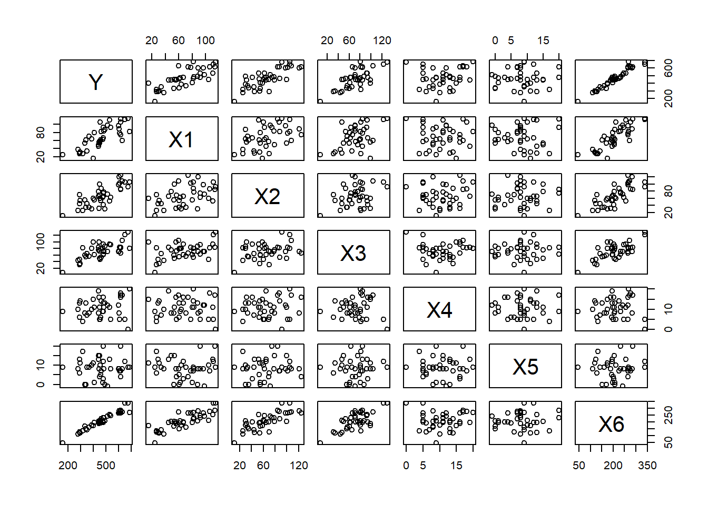
- 산점도 행렬을 살펴보면, 반응변수 \(Y\)와 설명변수 \(X\) 간에 선형적 관계가 있음을 알 수 있다. 특히 \(X6\)은 강한 선형성을 보이며 \(X1, X2, X3\)도 어느정도 선형성이 있음을 알 수 있음
7.2 다중선형회귀분석
- 6개의 설명변수 \(X\)와 반응변수 \(Y\)와의 다중선형회귀모형
\[ Y_i=\beta_0+\beta_1X_{1i}+\beta_2X_{2i}+\beta_3X_{3i}+\beta_4X_{4i}+\beta_5X_{5i}+\beta_6X_{6i}+\epsilon_i, \,\,\, i=1,2,\cdots, 40 \]
- 모형을 행렬로 다시 표현하면
\[ \mathbf{Y}=\mathbf{X}\beta+\epsilon \]
- 여기서
\[ \begin{pmatrix} Y_1\\Y_2\\\vdots\\Y_{40} \end{pmatrix}=\begin{pmatrix}1 & X_{1,1}&X_{1,2}&\cdots&X_{1,6}\\ 1 &X_{2,1}&X_{2,2}&\cdots &X_{2,6}\\ &\vdots & &\vdots &\\ 1&X_{40,1}&X_{40,2}&\cdots&X_{40,6} \end{pmatrix} \begin{pmatrix}\beta_0\\ \beta_1\\ \vdots \\ \beta_6 \end{pmatrix}+\begin{pmatrix} \epsilon_1\\ \epsilon_2 \\ \vdots \\ \epsilon_{40} \end{pmatrix} \]
여기서 \(\mathbf{Y}\)는 반응변수벡터, \(\mathbf{X}\)는 \(40\times 7\) 설계행렬(design matrix), \(\beta\)는 회귀계수벡터이고 \(\epsilon\)은 오차벡터
- 완전모형에 대한 최소제곱 추정
fit <- lm(Y~X1+X2+X3+X4+X5+X6, data=multi)
summary(fit)##
## Call:
## lm(formula = Y ~ X1 + X2 + X3 + X4 + X5 + X6, data = multi)
##
## Residuals:
## Min 1Q Median 3Q Max
## -54.267 -15.427 2.524 13.633 71.438
##
## Coefficients:
## Estimate Std. Error t value Pr(>|t|)
## (Intercept) 35.1772 22.0755 1.593 0.12058
## X1 2.8547 5.3372 0.535 0.59632
## X2 3.2753 5.3330 0.614 0.54332
## X3 3.1863 5.2887 0.602 0.55098
## X4 3.1878 0.9918 3.214 0.00292 **
## X5 -0.6677 0.8934 -0.747 0.46014
## X6 -1.1658 5.3217 -0.219 0.82794
## ---
## Signif. codes: 0 '***' 0.001 '**' 0.01 '*' 0.05 '.' 0.1 ' ' 1
##
## Residual standard error: 28.5 on 33 degrees of freedom
## Multiple R-squared: 0.9559, Adjusted R-squared: 0.9479
## F-statistic: 119.3 on 6 and 33 DF, p-value: < 2.2e-16- 따라서 추정된 회귀식은
\[ \hat{Y}=35.18+2.85X1+3.28X2+3.19X3+3.19X4-0.67X5-1.17X6 \]
여기서 수정된 \(R^2\)은 0.9479로 매우 높은 편이다. \(R^2\)는 전체 변동 중 적합된 회귀식에 의해 설명되는 비율을 나타내므로 설명량이 매우 높다고 할 수 있음
회귀계수의 신뢰구간
confint(fit)## 2.5 % 97.5 %
## (Intercept) -9.735797 80.090161
## X1 -8.003869 13.713291
## X2 -7.574837 14.125465
## X3 -7.573708 13.946270
## X4 1.169946 5.205616
## X5 -2.485251 1.149908
## X6 -11.992923 9.661246- 적합값(fitted value)과 신뢰구간
predict(fit, newdata=multi[1:20,-1], interval="confidence")## fit lwr upr
## 1 452.4554 433.3659 471.5449
## 2 305.0285 279.0820 330.9751
## 3 677.7860 643.3030 712.2690
## 4 516.6533 499.0103 534.2963
## 5 477.0185 447.7383 506.2987
## 6 307.4235 283.9517 330.8953
## 7 443.3003 413.2674 473.3332
## 8 615.2384 581.3873 649.0894
## 9 533.7755 511.6633 555.8877
## 10 424.2996 393.8434 454.7557
## 11 460.0212 439.2757 480.7668
## 12 135.0956 104.7676 165.4236
## 13 468.7317 445.1542 492.3093
## 14 489.0569 460.9848 517.1290
## 15 303.8659 268.0056 339.7262
## 16 546.6217 520.9281 572.3154
## 17 560.7264 538.1571 583.2956
## 18 614.9388 593.1832 636.6944
## 19 582.0898 562.0308 602.1488
## 20 441.8124 424.8033 458.8214- 예측값(predicted value)과 신뢰구간
new.data <- data.frame(
X1=sample(multi$X1,20),X2=sample(multi$X2,20),X3=sample(multi$X3,20),
X4=sample(multi$X4,20),X5=sample(multi$X5,20),X6=sample(multi$X6,20))
predict(fit, newdata=new.data, interval="prediction")## fit lwr upr
## 1 365.8525 161.74049 569.9646
## 2 487.5305 108.73591 866.3250
## 3 448.6729 -23.87866 921.2244
## 4 305.8030 -1026.92300 1638.5290
## 5 408.7551 330.40669 487.1035
## 6 335.8354 -620.11664 1291.7875
## 7 506.4663 228.65976 784.2728
## 8 559.8000 248.89707 870.7030
## 9 258.6692 -443.29556 960.6340
## 10 209.1758 -799.80566 1218.1572
## 11 385.6498 -246.26359 1017.5633
## 12 507.6996 -134.27669 1149.6758
## 13 502.2797 -226.26866 1230.8281
## 14 572.1360 14.93905 1129.3328
## 15 346.5968 -51.21006 744.4037
## 16 421.3392 -102.98081 945.6593
## 17 427.5129 34.07989 820.9459
## 18 299.5971 -458.20244 1057.3966
## 19 379.9453 -305.48510 1065.3758
## 20 598.2428 207.49219 988.99357.3 단계별 회귀에 의한 변수 선택
회귀모형에서 종속변수를 설명하기 위한 독립변수들 중에서 어떤 독립변수를 포함시키는 것이 최적의 모형이 되는지를 판단하는 것은 매우 중요한 문제임
단계별 변수선택법에서는 유의한 설명변수를 삽입하거나 유의하지 않은 설명 변수들을 제거함으로써 유의한 설명변수만으로 회귀 모형을 설정할 수 있음
library(MASS)
fit <- lm(Y~X1+X2+X3+X4+X5+X6, data=multi)
step <- stepAIC(fit, direction="both")## Start: AIC=274.31
## Y ~ X1 + X2 + X3 + X4 + X5 + X6
##
## Df Sum of Sq RSS AIC
## - X6 1 39.0 26852 272.37
## - X1 1 232.5 27045 272.66
## - X3 1 294.9 27108 272.75
## - X2 1 306.5 27119 272.76
## - X5 1 453.8 27267 272.98
## <none> 26813 274.31
## - X4 1 8393.8 35207 283.20
##
## Step: AIC=272.37
## Y ~ X1 + X2 + X3 + X4 + X5
##
## Df Sum of Sq RSS AIC
## - X5 1 441 27293 271.02
## <none> 26852 272.37
## + X6 1 39 26813 274.31
## - X4 1 8626 35478 281.51
## - X1 1 57280 84132 316.05
## - X3 1 71412 98264 322.26
## - X2 1 104243 131095 333.79
##
## Step: AIC=271.02
## Y ~ X1 + X2 + X3 + X4
##
## Df Sum of Sq RSS AIC
## <none> 27293 271.02
## + X5 1 441 26852 272.37
## + X6 1 26 27267 272.98
## - X4 1 8727 36020 280.12
## - X1 1 58811 86104 314.98
## - X3 1 71034 98327 320.29
## - X2 1 104172 131465 331.90step$anova # display results## Stepwise Model Path
## Analysis of Deviance Table
##
## Initial Model:
## Y ~ X1 + X2 + X3 + X4 + X5 + X6
##
## Final Model:
## Y ~ X1 + X2 + X3 + X4
##
##
## Step Df Deviance Resid. Df Resid. Dev AIC
## 1 33 26812.94 274.3104
## 2 - X6 1 38.99477 34 26851.94 272.3686
## 3 - X5 1 441.25106 35 27293.19 271.0205- 단계별 변수선택법을 이용하여 최종적으로 적합된 모형에 대한 요약 결과를 살펴보면 종속변수 \(Y\)에 영향을 주는 변수는 \(X1, X2, X3, X4\)가 선택됨
fit2 <- lm(Y~X1+X2+X3+X4, data=multi)
summary(fit2)##
## Call:
## lm(formula = Y ~ X1 + X2 + X3 + X4, data = multi)
##
## Residuals:
## Min 1Q Median 3Q Max
## -55.05 -17.03 2.83 17.08 72.40
##
## Coefficients:
## Estimate Std. Error t value Pr(>|t|)
## (Intercept) 28.3469 18.9141 1.499 0.14291
## X1 1.7006 0.1958 8.684 2.97e-10 ***
## X2 2.0907 0.1809 11.558 1.68e-13 ***
## X3 2.0209 0.2117 9.544 2.83e-11 ***
## X4 3.2295 0.9654 3.345 0.00197 **
## ---
## Signif. codes: 0 '***' 0.001 '**' 0.01 '*' 0.05 '.' 0.1 ' ' 1
##
## Residual standard error: 27.92 on 35 degrees of freedom
## Multiple R-squared: 0.9551, Adjusted R-squared: 0.95
## F-statistic: 186.3 on 4 and 35 DF, p-value: < 2.2e-16- 따라서 축소된 회귀모형은
\[ \hat{Y}=28.35+1.70X1+2.09X2+2.02X3+3.23X4 \]
- 이때 수정된 \(R^2\)은 0.95로 축소된 \(X\)로 \(Y\)의 \(95\%\)를 회귀직선으로 설명함을 알 수 있음
7.4 다중공선성
- 다중공선성을 확인하기 위해 분산팽창계수 VIF를 고려함
library(car)
fit2 <- lm(Y~X1+X2+X3+X4, data=multi)
vif(fit2)## X1 X2 X3 X4
## 1.489950 1.322866 1.276587 1.022997- VIF가 모두 10이하 이므로 다중공선성 문제는 고려하지 않아도 됨
fit <- lm(Y~X1+X2+X3+X4+X5+X6, data=multi)
vif(fit)## X1 X2 X3 X4 X5 X6
## 1062.167136 1103.595644 764.394462 1.036287 1.023312 5310.504807완전 모형에서는 \(X1, X2, X3, X6\)의 VIF 값이 매우 높게 나타나 다중공선성 문제를 심각히 고려하여 모형을 조정할 필요가 있음
회귀계수간 상관성
corr <- summary(fit, correlation=T)$correlation
plot(col(corr), row(corr), cex=10*abs(corr),
xlim=c(0,ncol(corr)+1),ylim=c(0,ncol(corr)+1))
7.5 지렛대점과 이상점
회귀분석 문제의 데이터에서 종종 특이하거나 극단적인 관측값을 볼 수 있음
영향력을 진단하는 방법인 지렛대점, 모자행렬, 잔차들을 이용하여 이상점을 찾아보고자 함
쿡의 거리는 모든 개체를 이용한 예측값 \(\hat{Y}_i\)와 \(i\)번째 관측값을 제외하고 구한 예측값 \(\hat{Y}_{(i)}\)과의 차이에 근거한 통계량으로, 이 값이 클수록 \(i\)번째 관측값은 이상점 혹은 영향점일 가능성이 높음
기준값 1 이상이면 이상점으로 판단될 수 있으며, 영향점의 기준은 \(D>4/n\) 또는 \(D>4/(n-p-1)\)을 이용
Cook’s D plot: identify \(D\) values \(>4/(n-p-1)=0.1212\)
cutoff <- 4/((nrow(multi)-length(fit2$coefficients)-2))
plot(fit2, which=4, cook.levels=cutoff)
- Cook’s D 값
cooks.distance(fit2)## 1 2 3 4 5 6
## 0.0040425103 0.0116141630 0.0015259657 0.0109580685 0.0035882257 0.0054170163
## 7 8 9 10 11 12
## 0.0071203481 0.0030085420 0.0037724075 0.0845608578 0.0029561177 0.0464073376
## 13 14 15 16 17 18
## 0.0512331630 0.0061171243 0.0058952052 0.0177805853 0.0975388310 0.0003397407
## 19 20 21 22 23 24
## 0.0089275397 0.0120393349 0.0032175818 0.0009346946 0.0104706759 0.0261316480
## 25 26 27 28 29 30
## 0.0247340417 0.0059275798 0.0080658277 0.0188522811 0.0004751104 0.0016070184
## 31 32 33 34 35 36
## 0.0094665269 0.0012165739 0.0605882937 0.2425048789 0.0072849928 0.0077147168
## 37 38 39 40
## 0.0075519438 0.3041838521 0.0136368104 0.0542270594- 쿡의 D값을 살펴보면 개체 34번, 38번이 기준값보다 높게 나타나 영향점으로 판단 됨
cutoff <- 4/((nrow(multi)-length(fit2$coefficients)-2))
plot(fit2, which=5, cook.levels=cutoff)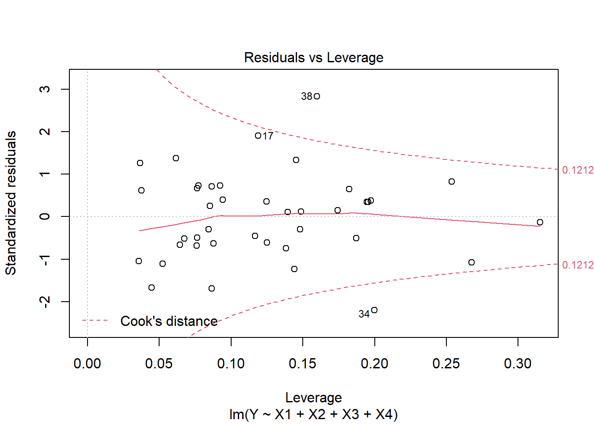
- DFFITS는 쿡의 거리 측도를 변형한 형태로 기준값은 \(2\sqrt{(p+1)/(n-p-1)}=0.81\)
dffits(fit2)## 1 2 3 4 5 6
## -0.14061665 -0.23837081 -0.08611240 0.23249772 0.13225515 -0.16268470
## 7 8 9 10 11 12
## 0.18635486 -0.12103362 -0.13587027 -0.65174652 0.12047791 0.47946774
## 13 14 15 16 17 18
## -0.51006523 -0.17347354 0.16951088 -0.29623024 0.72688515 0.04062836
## 19 20 21 22 23 24
## 0.20983789 0.24749875 0.12529044 0.06740046 -0.22670678 -0.37135284
## 25 26 27 28 29 30
## 0.35630621 0.16997599 -0.20107645 0.30444729 0.04804765 -0.08845918
## 31 32 33 34 35 36
## 0.21597930 0.07694221 0.55685302 -1.16947699 0.18930180 -0.19488673
## 37 38 39 40
## -0.19260558 1.38391019 -0.26201959 -0.53554690plot(dffits(fit2), type="h")
abline(h=0.81, lty=2)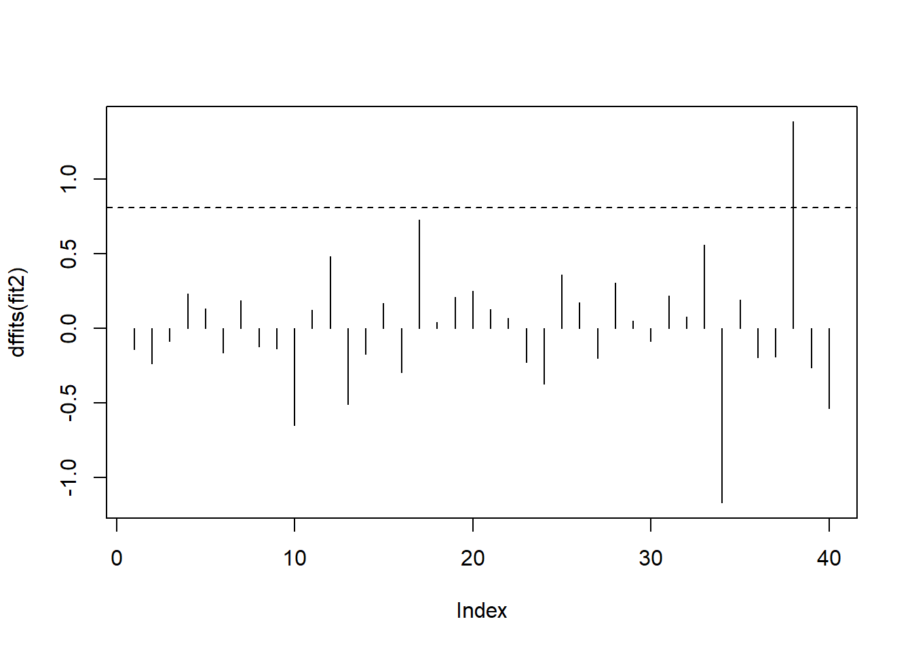
38번째 개체가 영향점 혹인 이상점일 가능성이 높음
모자행렬의 대각원소 \(h_{ii}\)는 어떠한 관측의 값이 특이한지 아닌지를 알아내는 데 유용한 측도임
지렛대점에 대한 \(h_{ii}\)는 일반적으로 평균 지렛대값 \(\bar{h}\)보다 두 배 이상이면 크다고 간주함
관측값 \(Y_i\)가 일반적으로 지렛대점에 상응되어 나타나면 좋은 지렛대점이라 하며, 관측값들에 비해 떨어져 있으며 이상점과 대응되어 나타나면 나쁜 지렛대점이라고 함
cutoff <- 4/((nrow(multi)-length(fit2$coefficients)-2))
plot(fit2, which=6, cook.levels=cutoff)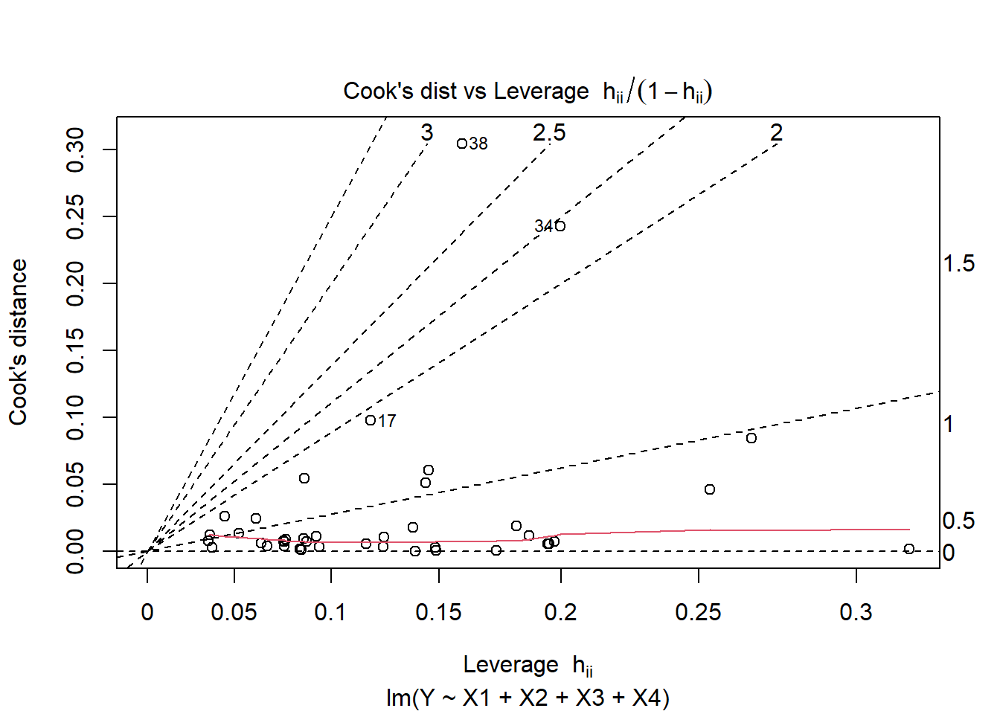
아래 영향력 그림은 모자행렬에 대한 스튜던트화 잔차의 영향점 그림으로 지렛대값에 대한 스튜던트화 잔차와 더불어 쿡의 거리를 원의 크기로 표현한 그림
원의 크기를 보면 34번째, 38번째 관측에 대한 쿡의 거리값이 가장 크게 나타남
수직 참조선은 \(\hat{h}\)의 평균값이며 수평 참조선은 -2, 0, 2의 값을 나타냄
Influence plot
influencePlot(fit2)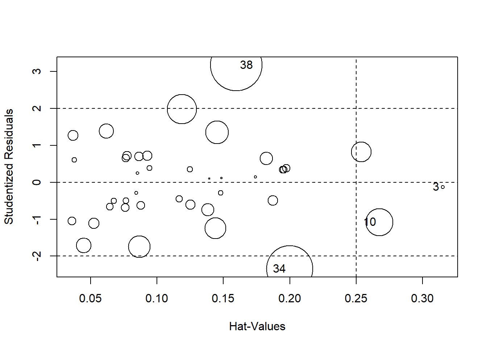
## StudRes Hat CookD
## 3 -0.1269232 0.3152134 0.001525966
## 10 -1.0784317 0.2675253 0.084560858
## 34 -2.3406250 0.1997716 0.242504879
## 38 3.1738803 0.1597507 0.304183852- 이상점 검정
influencePlot(fit2)
## StudRes Hat CookD
## 3 -0.1269232 0.3152134 0.001525966
## 10 -1.0784317 0.2675253 0.084560858
## 34 -2.3406250 0.1997716 0.242504879
## 38 3.1738803 0.1597507 0.304183852outlierTest(fit2)## No Studentized residuals with Bonferroni p < 0.05
## Largest |rstudent|:
## rstudent unadjusted p-value Bonferroni p
## 38 3.17388 0.0031874 0.1275- 영향력 판단과 이상점 검정을 통해 38번째 관측값을 자세히 살펴볼 필요가 있음
7.6 잔차분석
다중선형회귀모형에서 오차항에 대한 등분산성, 독립성, 정규성 가정에 대한 검토가 필요함
적합값 vs. 잔차 그림
plot(fit2, which=1)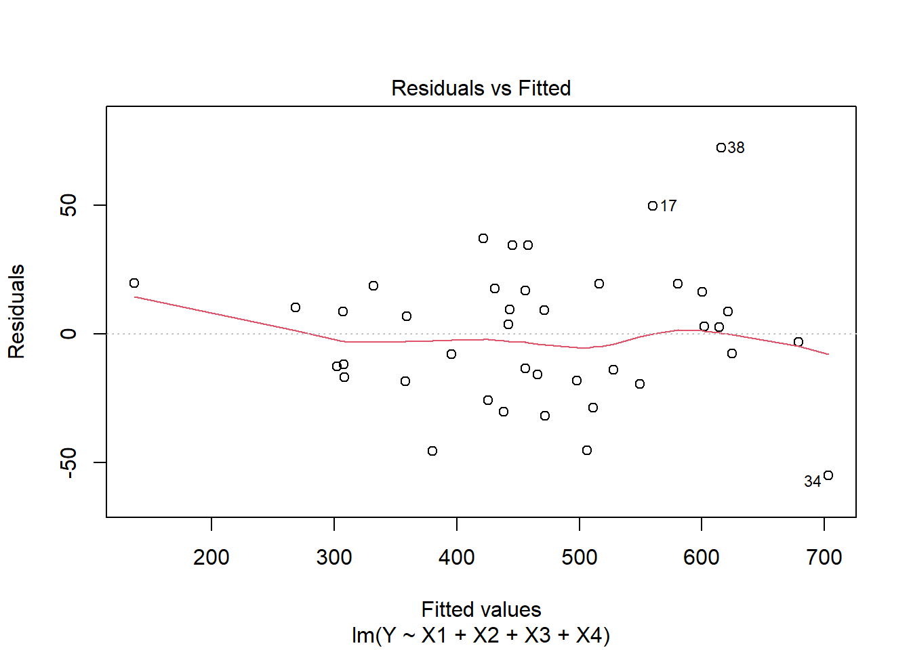
plot(fit2, which=3)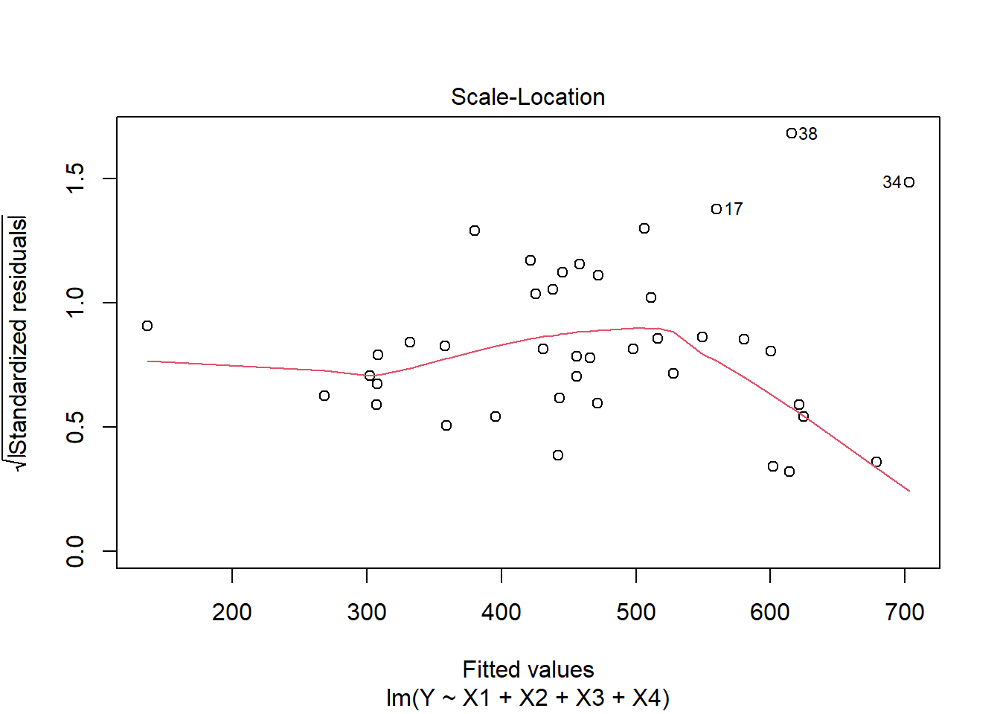
잔차 그림에서는 기본적으로 잔차에 대한 등분산성을 살펴볼 수 있음
그림을 살펴보면 0을 중심으로 랜덤하게 분포되어 보이기는 하지만 관측값 38번, 34번에 의해 수평대의 형태를 약간 벗어난 것으로 보임. 그러나 전반적으로 잔차가 수평대 이내에 놓여 있고 양이나 음의 값이 계통적(systematic)인 경향을 보이지 않고 랜덤하게 나타나고 있으므로 선형성을 대체로 만족한다고 할 수 있음.
편잔차그림을 이용해 다중회귀의 선형성에 대한 검토를 할 수 있음
편잔차그림에서 직선을 살펴보면 선형성을 만족하는 경우의 점선에 가까운 편이므로 모형에 적합된 변수들이 선형성을 크게 벗어나지 않는다고 여겨져 선형모형의 타당성을 뒷받침 함
편잔차그림
crPlots(fit2)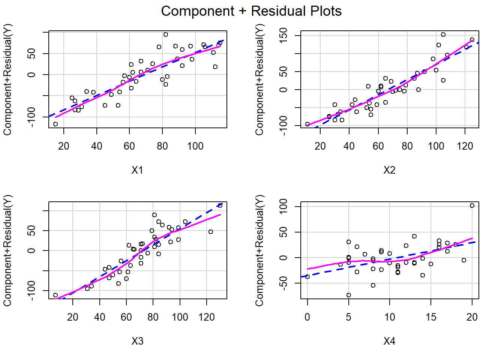
정규성 가정에 대한 검토는 잔차에 대한 Q-Q plot, 스튜던트화 잔차에 대한 t-분포 Q-Q plot, 잔차에 대한 Shapiro-Wilks 검정 등을 통해 수행함
정규성 검정
plot(fit2, which=2)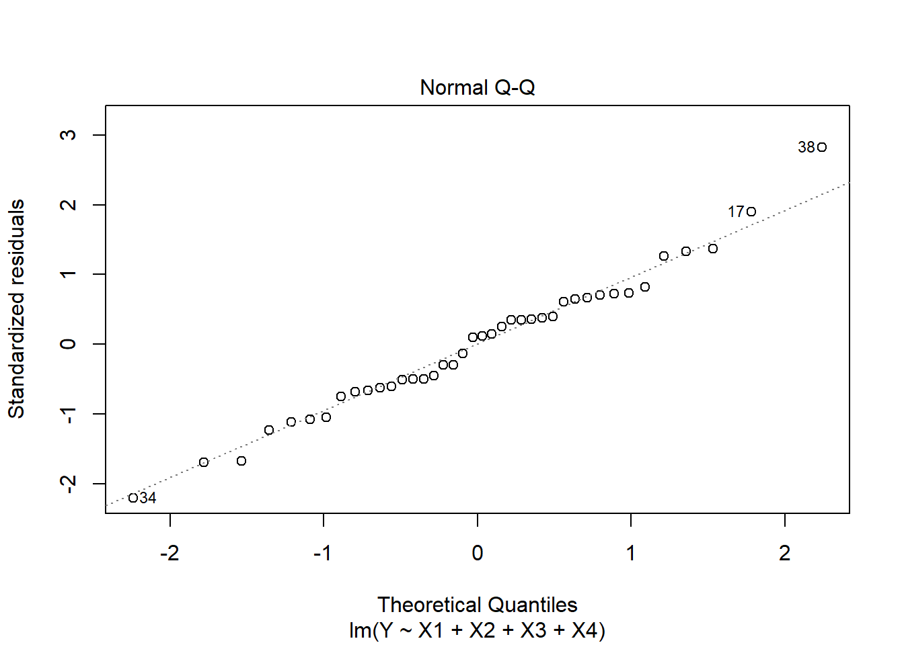
qqPlot(fit2)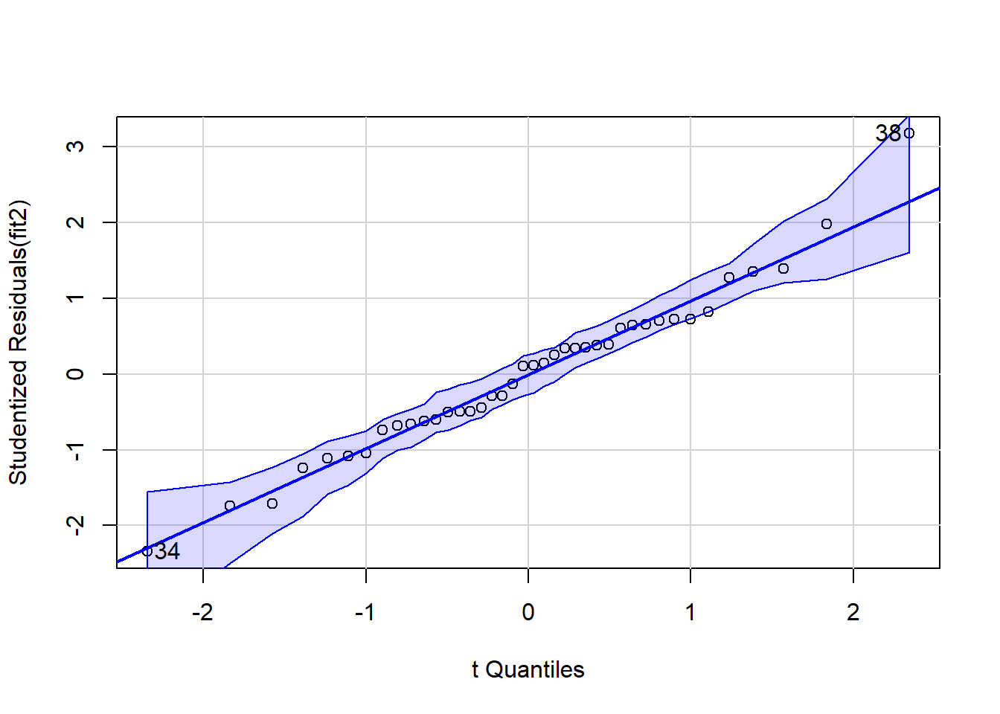
## [1] 34 38residual <- resid(fit2)
shapiro.test(residual)##
## Shapiro-Wilk normality test
##
## data: residual
## W = 0.98271, p-value = 0.7883Shapiro-Wilks 검정을 통해 살펴보면, 정규성 가정을 만족하는 것으로 나타남
등분산성 검정(non-constant error variance test)
spreadLevelPlot(fit2)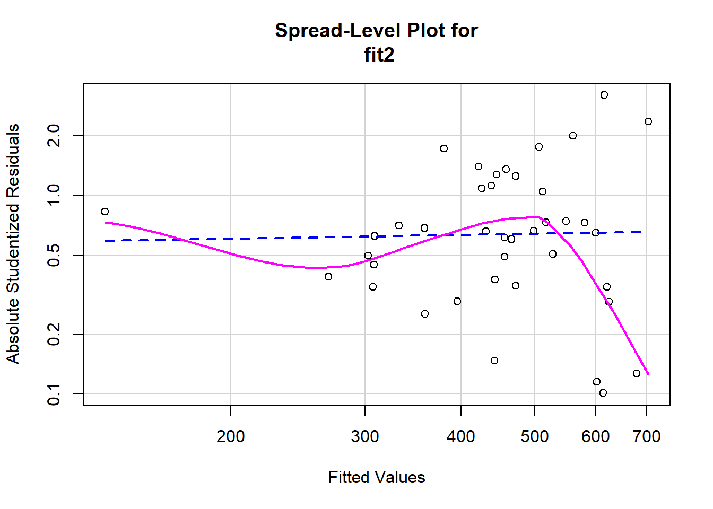
##
## Suggested power transformation: 0.9365597ncvTest(fit2)## Non-constant Variance Score Test
## Variance formula: ~ fitted.values
## Chisquare = 3.507139, Df = 1, p = 0.061105등분산성 검정에서도 특별한 이슈가 발생하지 않는 것으로 나타남
독립성 검정
durbinWatsonTest(fit2)## lag Autocorrelation D-W Statistic p-value
## 1 -0.212897 2.344761 0.26
## Alternative hypothesis: rho != 0- 더빈-왓슨 검정을 통해 독립성을 살펴보면 문제가 없는 것으로 나타남
7.7 모형 제안 및 예측
- 이상점에 대한 이슈가 있긴 했지만 모든 개체를 모함한 최종 모형은 \(X1, X2, X3, X4\)를 이용한 다중회귀 모형으로 선정
require(graphics)
fit2 <- lm(Y~X1+X2+X3+X4, data=multi)
pred.pre <- predict(fit2, interval="prediction")
pred.con <- predict(fit2, interval="confidence")
pred.dat <- cbind(pred.con,pred.pre[,-1])
matplot(pred.dat,col=c(1,2,2,3,3), lty=c(1,2,2,3,3), type="l")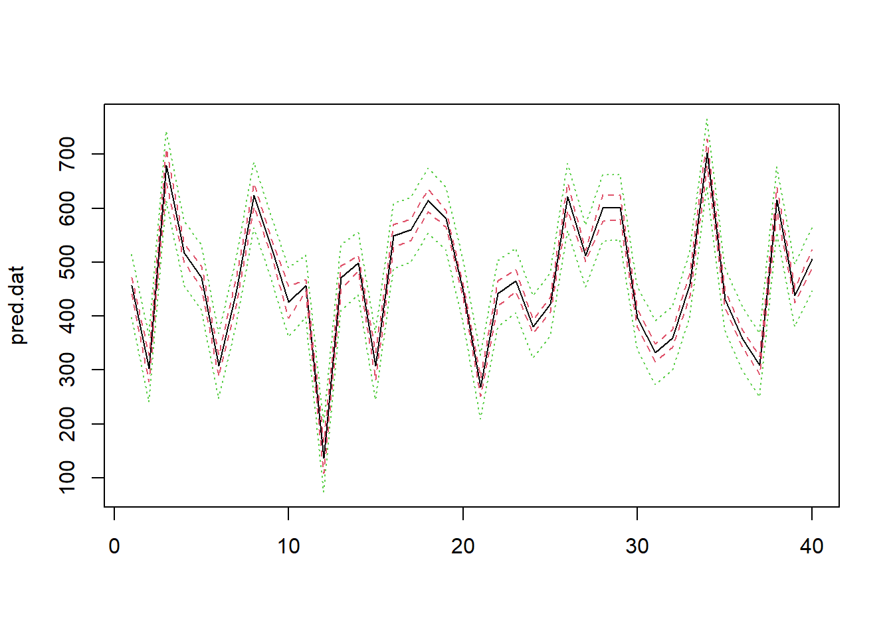
pred.con## fit lwr upr
## 1 456.2634 440.5912 471.9357
## 2 302.6355 278.0991 327.1718
## 3 678.9751 647.1467 710.8035
## 4 516.4949 499.2540 533.7359
## 5 471.7316 451.7075 491.7557
## 6 307.8860 288.5233 327.2487
## 7 443.4834 418.2930 468.6739
## 8 624.5821 602.7663 646.3980
## 9 527.7742 513.0539 542.4945
## 10 425.7142 396.3921 455.0363
## 11 456.1641 445.1628 467.1655
## 12 137.0722 108.5153 165.6291
## 13 471.8829 450.3707 493.3951
## 14 497.9870 483.5876 512.3863
## 15 307.2503 282.2352 332.2655
## 16 549.2984 528.2205 570.3764
## 17 560.1461 540.6051 579.6871
## 18 614.3461 593.1858 635.5065
## 19 580.4312 564.6617 596.2006
## 20 445.4612 434.6263 456.2961
## 21 268.5420 251.1490 285.9350
## 22 442.2220 418.5646 465.8794
## 23 465.8172 445.7779 485.8564
## 24 380.5561 368.5576 392.5545
## 25 421.9171 407.8311 436.0032
## 26 621.2499 596.1895 646.3103
## 27 511.5791 500.8531 522.3050
## 28 600.5784 576.3755 624.7813
## 29 601.9935 580.1422 623.8448
## 30 395.8933 379.4312 412.3554
## 31 332.1211 315.4544 348.7877
## 32 359.1801 342.6206 375.7396
## 33 458.5225 436.9198 480.1253
## 34 703.0536 677.7152 728.3920
## 35 431.1899 415.5214 446.8583
## 36 358.3910 342.7687 374.0133
## 37 308.7102 291.9164 325.5040
## 38 615.6009 592.9423 638.2596
## 39 438.1830 425.2050 451.1609
## 40 506.1192 489.4322 522.8062pred.pre## fit lwr upr
## 1 456.2634 397.44624 515.0806
## 2 302.6355 240.86272 364.4082
## 3 678.9751 613.96059 743.9896
## 4 516.4949 457.24046 575.7494
## 5 471.7316 411.60836 531.8549
## 6 307.8860 247.97973 367.7922
## 7 443.4834 381.44797 505.5189
## 8 624.5821 563.83865 685.3256
## 9 527.7742 469.20351 586.3450
## 10 425.7142 361.88924 489.5392
## 11 456.1641 398.41580 513.9125
## 12 137.0722 73.59513 200.5493
## 13 471.8829 411.24782 532.5180
## 14 497.9870 439.49608 556.4778
## 15 307.2503 245.28585 369.2148
## 16 549.2984 488.81604 609.7808
## 17 560.1461 500.18199 620.1102
## 18 614.3461 553.83494 674.8573
## 19 580.4312 521.58803 639.2744
## 20 445.4612 387.74435 503.1781
## 21 268.5420 209.24314 327.8409
## 22 442.2220 380.79306 503.6509
## 23 465.8172 405.68886 525.9455
## 24 380.5561 322.60949 438.5026
## 25 421.9171 363.50259 480.3317
## 26 621.2499 559.26708 683.2327
## 27 511.5791 453.88254 569.2756
## 28 600.5784 538.93730 662.2194
## 29 601.9935 541.23727 662.7497
## 30 395.8933 336.86073 454.9258
## 31 332.1211 273.03113 391.2110
## 32 359.1801 300.12028 418.2399
## 33 458.5225 397.85524 519.1898
## 34 703.0536 640.95787 765.1493
## 35 431.1899 372.37367 490.0060
## 36 358.3910 299.58711 417.1949
## 37 308.7102 249.58427 367.8361
## 38 615.6009 554.54969 676.6522
## 39 438.1830 380.02568 496.3402
## 40 506.1192 447.02351 565.2148